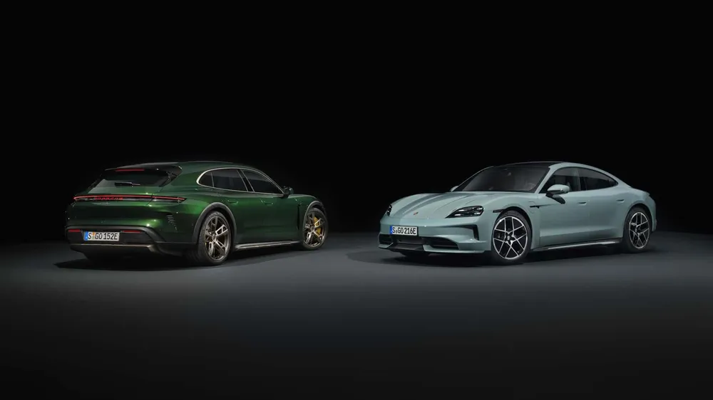

- porche 911
- porche 718
- porche Taycan

Soul, Electrified. Taycan
독일의 자동차 제조사인 포르쉐에서 2019년부터 생산하는 준대형 전기 스포츠 세단이자, 포르쉐의 첫 순수 전기자동차이다.
파나메라의 아랫급[1] 모델이며, 파워트레인은 리막이 설계한 시스템을 사용했다. 패스트백 모델에 이어 에스테이트 모델인 스포트 투리스모 모델도 출시했다. 타이칸은 튀르키예어로 "기운찬 젊은 말"[2]이란 뜻으로서 포르쉐 로고의 슈투트가르트의 휘장 속의 말을 의미한다.
한때 soul이란 로고를 달고 서울에서 광고를 찍은 적이 있다. Soul과 Seoul이 비슷하다는 이유로 Seoul, Electrified라고 홍보했다.